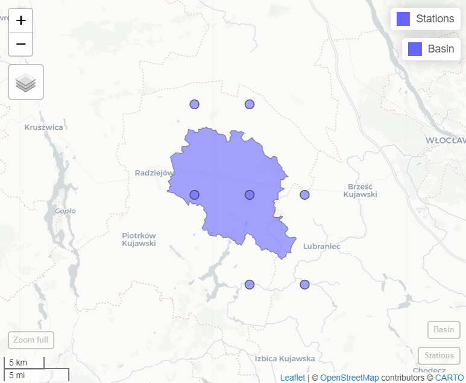
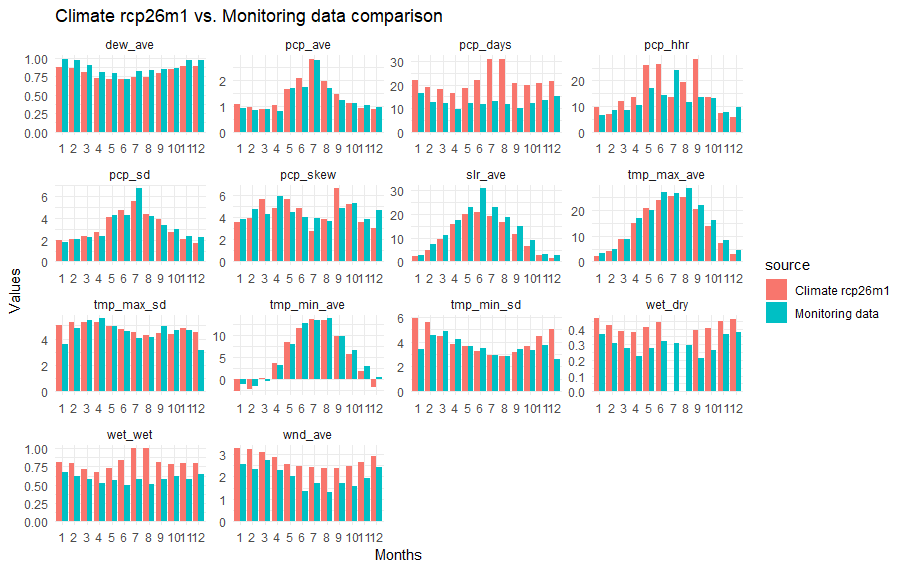

Introduction
Intensification of climate change is raising multiple questions for water management, which often can be addressed using modeling tools such as SWAT+. To make it happen, it is necessary in first step to prepare climate forcing data, usually originating from selected global or regional climate models. GCM or RCM simulations usually undergo downscaling and/or bias adjustment before being applied in hydrological contexts. For example, in OPTAIN project, bias adjusted climate forcing data were prepared for 14 small agricultural catchments in Europe and are available on Zenodo. In the final step, prepared climate datasets should be transformed into SWAT+ text file format. The model also requires that weather generator and other files are updated for correct representation of climate scenario. This section only covers the final step of climate data conversion into SWAT+ model input and updating of relevant files.
Input format
SWATprepR functions can be applied on weather data
delivered in two type of input formats:
-
NetCDFfiles delivered with .nc files (Case 1). In this case required variables should be saved into files saved with following names:- Daily precipitation - prec.nc;
- Relative humidity - relHum.nc;
- Solar radiation - solarRad.nc;
- Maximum daily temperature - Tmax.nc;
- Minimum daily temperature - Tmin.nc;
- Average wind speed - windSpeed.nc.
- SWAT+ weather input text files (Case 2). In this case
following file endings represent different parameters:
- Daily precipitation - .pcp;
- Relative humidity - .hmd;
- Solar radiation - slr;
- Minimum and maximum daily temperature - .tmp;
- Wind speed - .wnd.
Case 1 - extracting from NetCDF
NetCDF data can’t be directly used in SWAT+ model. Thus
SWATperpR package provides load_netcdf_weather
function to extract weather data from .nc file into R format
used by this package. This function only needs a path to your basin
shape file and a path to folder with .nc files. Following lines
provides an example how to use it.
library(SWATprepR)
basin_path <- "GIS/basin.shp"
cordex_path <- "climate/CORDEX-BC"
climate_lst <- load_netcdf_weather(cordex_path, basin_path)The function creates virtual stations for each NetCDF
grid cell touching basin boundary touches. Virtual stations coordinates
are defined as center of grid cell centers. Then, for each of these
virtual stations, data are extracted and saved in the nested list
format.

load_netcdf_weather function could also extract data for specific stations. In this case nested lists with dataframes should be provided (common format used in this package that could be prepared by load_template function).
Nested structure:
-
meteo_lst
-
data
- Station ID
- VARIABLE
- Dataframe (DATE, VARIABLE).
- VARIABLE
- Station ID
-
stations
- Dataframe (ID, Name, Elevation, Source, geometry, Long, Lat)
-
data
temp_path <- system.file("extdata", "weather_data.xlsx", package = "SWATprepR")
met_lst <- load_template(temp_path, 3035)
climate_lst <- load_netcdf_weather(cordex_path, met_lst)Case 2 - preparing climate set from SWAT+ format
In case climate dataset is already in SWAT+ format it could be loaded into R nested list format with load_swat_weather function. This function allow loading any SWAT+ weather data. The only required input is a path to folder with data. The function will read and load all SWAT+ input weather files available in this folder.
input_folder <- "my_climate_data"
climate_lst <- load_swat_weather(input_folder)Following functions presented in this page are independent of the way climate data are loaded into R.
Examining climate data
Loaded climate data can be examined with functions available in the
SWATperpR package. For instance the function plot_weather can be used to
plot climate data. The function plot_weather_compare
can help compare climate data to measurement data by plotting both in
the same figure.
plot_weather(climate_lst, "TMP_MAX", "year", "max")
Another plot_wgn_comparison function might be useful to get statistical comparison of climate model data with monitoring data used to drive the model in calibration/validation periods. The function automatically filters climate model data for available monitoring data time interval. Thus comparison is only for same time period data.
##Loading data from the template with load_template function
temp_path <- "my_folder/weather_data.xlsx"
met_lst <- load_template(temp_path, 4326)
##And plotting comparison of statistical values with climate data
plot_wgn_comparison(climate_lst, met_lst, , "ID20", "ID2", "Climate rcp26m1", "Monitoring data", "comparison")
Other functions from Weather data section are also applicable. This allows to update SWAT+ .sqlite database with climate data, prepare weather generator parameters, etc.
Preparing SWAT+ climate forsing data
prepare_climate function is used prepare/update model input text files needed to run climate scenarios. Nothing else is needed just to replace model input files with prepared set of files. The function prepares following files:
- Weather time series input files: .pcp, .slr, .hmd, .tmp, .wnd;
- Reference files for weather files: wnd.cli, tmp.cli, pcp.cli, slr.cli, hmd.cli;
- Weather generator files: weather-sta.cli, weather-wgn.cli.
The function also updates aquifer.con, chandeg.con, hru.con, reservoir.con, rout_unit.con and time.sim SWAT+ model input files.
Following lines provides example in which prepare_climate function runs in several loops and prepares all climate data input sets and folder structure in one go.
##Path to your SWAT+ model project directory
project_dir <- "../output/overwrite/tmp"
##These files will be copied from model directory and updated with prepare_climate function
files_to_copy <- paste(project_dir, c("aquifer.con", "chandeg.con", "hru.con", "reservoir.con", "rout_unit.con", "time.sim"), sep="/")
##Main loop for each rcp
for (rcp in c("rcp26", "rcp45", "rcp85")){
##Each rcm
for (rcm in as.character(c(1:6))){
##Loading climate data from SWAT+ input files
climate_lst <- load_swat_weather(paste("my_climate_data_folder", rcp, rcm, sep = "/"))
##Each period
for(p in list(c("H", "1988-01-01", "2020-12-31"), c("N", "2033-01-01", "2065-12-31"), c("E", "2067-01-01", "2099-12-31"))){
##Creating new directory
cli_dir <- paste("../output/cli", rcp, paste0("rcm", rcm), p[1], sep = "/")
dir.create(cli_dir, recursive = TRUE)
##Coping files to update
file.copy(files_to_copy, paste(cli_dir, c("aquifer.con", "chandeg.con", "hru.con", "reservoir.con", "rout_unit.con", "time.sim"), sep = "/"), overwrite = TRUE)
##Running function to prepare climate input for scenario
prepare_climate(climate_lst, cli_dir, p[2], p[3])
print(paste(rcp, "rcm", rcm, p[1], p[2], "-", p[3], "set prepared."))
}
}
}